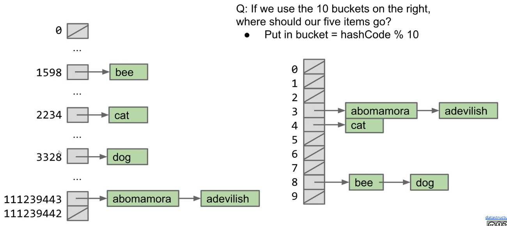

Lecture 20: Hash Tables
10/12/2020
Data Indexed Arrays
Limits of Search Tree Based Sets
- Our search tree sets require items to be comparable
- Need to be able to ask "is X < Y?" Not true of all types
- Could we somehow avoid the need for objects to be comparable
- Search tree sets have excellent performance, but could maybe be better
- Could we somehow do better than Theta(log N)?
Using Data as an Index
- One extreme approach: Create an array of booleans indexed by data!
- Initially all values are false
- When an item is added, set the appropriate index to true
- i.e. 1F 2F 3T 4F 5F 6T 7F 8F ... is a set containing 3 and 6
public class DataIndexedIntegerSet {
private boolean[] present;
public DataIndexedIntegerSet() {
present = new boolean[2000000000];
}
public add(int i) {
present[i] = true;
}
public contains(int i) {
return present[i];
}
}
- Everything runs in constant time
- Downsides of this approach:
- Extremely wasteful of memory. To support checking presence of all positive integers
- Need some way to generalize beyond integers
DataIndexedEnglishWordSet
Generalizing the DataIndexedIntegerSet Idea
- Ideally, we want a data indexed set that can store arbitrary types
- The previous idea only supports integers!
- Let's talk about storing Strings. We'll go into generics later
- Suppose we want to add ("cat")
- The key question:
- What is the cat'th element of a list?
- One idea: Use the first letter of the word as an index
- What's wrong with this approach?
- Other words start with c
- contains("chupacabra"): true ("chupacabra" collides with "cat")
- Can't store "=98tu4it92"
Avoiding Collisions
- Use all digits by multiplying each by a a power of 27
- Thus, the index of "cat" is (3 x 27^2) + (1 x 27^1) + (20 x 27^0) = 2234
- Why this specific pattern?
- Let's review how numbers are represented in decimal
THe Decimal Number System vs. Our Own System for Strings
- In the decimal number system, we have 10 digits
- Want numbers larger than 9? Use a sequence of digits
- Our system for strings is almost the same, but with letters
Uniqueness
- As long as we pick a base >= 26, this algorithm is guaranteed to give each lowercase English word a unique number!
- Using base 27, no words will get the number 1598
- In other words: Guaranteed that we will never have a collision
public class DataIndexedEnglishWordSet {
private boolean[] present;
public DataIndexedEnglishWordSet() {
present = new boolean[2000000000];
}
public add(String s) {
present[englishToInt(s)] = true;
}
public contains(String s) {
return present[englishToInt(s)];
}
}
DataIndexedStringSet
DataIndexedStringSet
- Using only lowercase English characters is too restrictive
- To understand what value we need to use for our base, let's discuss briefly the ASCII standard
- Maximum possible value for english-only text including punctuation is 126, so let's use 126 as our base in order to ensure unique values for possible strings
ASCII Characters
- THe most basic character set used by most computers is ASCII format
- Each possible character is assigned a value between 0 and 127
- Characters 33-126 are "printable", and are shown below
- For example,
char c = 'D' is equivalent to char c = 68
Implementing asciiToInt
- The corresponding integer conversion function is actually even simpler than
englishToInt. Using the raw character value means we avoid the need for a helper method
Going Beyond ASCII
- chars in Java also support character sets for other languages like Chinese
- This encoding is known as Unicode. Table is too big to list
Example: Computing Unique Representations of Chinese
- The largest possible value for chinese characters is 40959, so we'd need to use this as our base if we want to have a unique representation for all possible strings of Chinese characters
Integer Overflow and Hash Codes
Major Problem: Integer Overflow
- In Java, the largest possible integer is 2147483647
- If you go over this limit, you overflow, starting back over at the smallest integer, which is -2147483647
Consequence of Overflow: Collisions
- Because Java has a maximum integer, we won't get the numbers we expect
- With base 126, we will run into overflow even for short strings
- Example: omens = 28196917171, which is much greater than the maximum integer
- Overflow can result in collisions, causing incorrect answers
Hash Codes and the Pigeonhole Principle
- The official term for the number we're computing is "hash code"
- A has code "projects a value from a set with many (or even an infinite number of) members to a value from a set with a fixed number of (fewer) members"
- Here, our target set is the set of Java integers, which is of size 4294967296
- Pigeonhole principle tells us that if there are more than 4294967296 possible items, multiple items will share the same hash code
- Hence, collisions are inevitable
Two Fundamental Challenges
- Two Fundamental Challenges
- How do we resolve hashCode collisions
- We'll call this collision handling
- How do we compute a hash code for arbitrary objects?
- We'll call this computing a hashCode
Hash Tables: Handling Collisions
Resolving Ambiguity
- Pigeonhole principle tells us that collisions are inevitable due to integer overflow
- Suppose N items have the same numerical representation h:
- Instead of storing true in position h, store a "bucket" of these N items at position h
- How to implement a "bucket"?
- Any type of list or set or data structure
The Separate Chaining Data Indexed Array
- Each bucket in our array is initially empty. When an item x gets added at index h:
- If bucket h is empty, we create a new list containing x and store it at index h
- If bucket h is already a list, we add x to this list if it is not already present
- We might call this a "separate chaining data indexed array"
- Bucket #h is a "separate chain" of all items that have hash code h
- Observation: Worst case runtime will be proportional to length of longest list
- contains: Theta(Q)
- insert: Theta(Q)
- Q: Length of longest list
Saving Memory Using Separate Chaining
- Observation: We don't really need billions of buckets
- If we use just 10 buckets, where should our items go?
- Observation: Can use modulus of hashcode to reduce bucket count
- Put in bucket = hashCode % 10
- Downside: Lists will be longer

The Hash Table
- What we've just created here is called a hash table
- Data is converted by a hash function into an integer representation called a hash code
- The hash code is then reduced to a valid index, usually using the modulus operator, e.g. 2348762878 % 10 = 8
Hash Table Runtime
- The good news: We use way less memory and can now handle arbitrary data
- The bad news: Worst case runtime (for both contains and insert) is now Theta(Q), where Q is the length of the longest list
- For the has table with 5 buckets, the order of growth of Q with respect to N is Theta(N)
- In the best case, the length of the longest list will be N/5. IN the worst case, it will be N. In both cases, Q(N) is Theta(N)
Improving the Hash Table
- Suppose we have:
- A fixed number of buckets M
- An increasing number of items N
- Major problem: Even if items are spread out evenly, lists are of length Q = N/M
- How can we improve our design to guarantee that N/M is Theta(1)
Hash Table Runtime
- A solution:
- An increasing number of buckets M
- An increasing number of items N
- One example strategy: When N/M is >= 1.5, then double M
- We often call this process of increasing M "resizing"
- N/M is often called the "load factor". It represents how full the hash table is
Resizing Hash Table Runtime
- As long as M = Theta(N), then O(N/M) = O(1)
- Assuming items are evenly distributed, lists will be approximately N/M items long, resulting in Theta(N/M) runtimes
- Our doubling strategy ensures that N/M = O(1)
- Thus, worst case runtime for all operations if Theta(N/M) = Theta(1)
- ... unless that operation causes a resize
- One important thing to consider is the cost of the resize operation
- Resizing takes Theta(N) time. Have to redistribute all items
- Most add operations will be Theta(1). SOme will be Theta(N) time (to resize)
- Similar to our ALists, as long as we resize by a multiplicative factor, the average runtime will still be Theta(1)
Has Table Runtime
- Hash table operations are on average constant time if:
- We double M to ensure constant average bucket length
- Items are evenly distributed
- contains: Theta(1) (Assuming all items are even spaced)
- add: Theta(1) (On average)
Regarding Even Distribution
- Even distribution of items is critical for good hash table performance
- We will need to discuss how to ensure even distribution
Hash Tables in Java
The Ubiquity of Hash Tables
- Has tables are the most popular implementation for sets and maps
- Great performance in practice
- Don't require items to be comparable
- Implementations often relatively simple
- Python dictionaries are just hash tables in disguise
- In Java, implemented as java.util.HashMap and java.util.HashSet
- How does a HashMap know how to compute each object's hash code?
- Good news: It's not "implements Hashable"
- Instead, all objects in Java must implement a
.hashCode() method
Objects
- All classes are hyponyms of Object
int hashCode() (Default implementation simply returns the memory address of the object)
Examples of Real Java HashCodes
- We can see that Strings in Java override hasCode, doing something vaguely like what we did earlier
- Will see the actual hashCode() function later
"a".hashCode() // 97
"bee".hashCode() // 97410
Using Negative hash codes
- Suppose that we have a hash code as -1
- Given a hash table of length 4, we should put this object in bucket 3
- Unfortunately, -1 % 4 = -1. Will result in index errors!
- Use Math.floorMod instead
-1 % 4 // -1
Math.floorMod(-1, 4) // 3
Hash Tables in Java
- Java hash tables:
- Data is converted by the hashCode method an integer representation called a hash code
- The hash code is then reduced to a valid index, using something like the floorMod function
Two Important Warnings When Using HashMaps/HashSets
- Warning #1: Never store objects that can change in a HashSet or HashMap!
- If an object's variables changes, then its hasCode changes. May result in items getting lost.
- Warning #2: Never override equals without also overriding hashCode
- Can also lead to items getting lost and generally weird behavior
- HasMaps and HashSets use equals to determine if an item exists in a particular bucket
Good HashCodes
What Makes a good hashCode()?
- Goal: We want has tables that are evenly distributed
- Want a hasCode that spreads things out nicely on real data
- Returning string treated as a base B number can be good
- Writing a good hashCode() method can be tricky
Hashbrowns and Hash Codes
- How do you make hashbrowns?
- Chopping a potato into nice predictable segments? No way!
- Similarly, adding up the characters is not nearly "random" enough
- Can think of multiplying data by powers of some base as ensuring that all the data gets scrambled together into a seemingly random integer
Example hasCode Function
- The Java 8 hash code for strings. Two major differences from our hash codes:
- Represents strings as a base 31 number
- Why such a small base? Real hash codes don't care about uniqueness
- Stores (caches) calculated has code so future hashCode calls are faster
@Override
public int hasCode() {
int h = cachedHashValue;
if (h == 0 && this.length() > 0) {
for (int i = 0; i < this.length; i++) {
h = 31 * h + this.charAt(i);
}
cachedHasValue = h;
}
return h;
}
Example: Choosing a Base
- Which is better? ASCII's base 126 or Java's base 31
- Might seem like 126 is better. Ignoring overflow, this ensures a unique numerical representation for all ASCII strings
- ... but overflow is a particularly bad problem for base 126!
- Any string that ends in the same last 32 characters has the same has code
- Why? Because of overflow
- Basic issue is that 126^32 = 126^33 = 126^34 = ... = 0
- Thus upper characters are all multiplied by zero
- See CS61C for more
Typical Base
- A typical hash code base is a small prime
- Why prime?
- Never even: Avoids the overflow issue on previous slide
- Lower chance of resulting hasCode having a bad relationship with the number of buckets
- Why small?
Hashbrowns and Hash Codes
- Using a prime base yields better "randomness" than using something like base 126
Example: Hashing a Collection
- Lists are a lot like strings: Collection of items each with its own hashCode:
@Override
public int hashCode() {
int hashCode = 1;
for (Object o : this) {
hashCode = hashCode * 31; // elevate/smear the current hash code
hashCode = hashCode + o.hashCode(); // add new item's hash code
}
return hashCode
}
- To save time hashing: Look at only first few items
- Higher chance of collisions but things will still work
Example: Hashing a Recursive Data Structure
- Computation of the hashCode of a recursive data structure involves recursive computation
- For example, binary tree hashCode (assuming sentinel leaves):
@Override
public int hashCode() {
if (this.value == null) {
return 0;
}
return this.value.hashCode() +
31 * this.left.hashCode() +
31 * 31 * this.right.hashCode();
}
Summary
Hash Tables in Java
- Hash tables:
- Data is converted into a hash code
- The hash code is then reduced to a valid index
- Data is then stored in a bucket corresponding to that index
- Resize when load factor N/M exceeds some constant
- If items are spread out nicely, you get Theta(1) average runtime